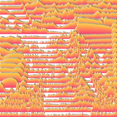

Contour Strips

Draws stacked paper strips whose height follows the layer's brightness or opacity, like a ridge-line landscape.
Settings
| Setting | Type | Range | Default |
|---|---|---|---|
| Count | Number | 0.5 to 200 | 10 |
| Height | Number | 0 to 15 | 1 |
| Angle | Angle | -3600° to 3600° | 0° |
| Thickness | Number | 0 to 1 | 0.005 |
| Phase | Number | -1000 to 1000 | 0 |
| Invert | On or off | – | Off |
| Edge Color | Color | – | #223355 |
| Color 1 | Color | – | #FF9933 |
| Color 2 | Color | – | #AA3399 |
| Light Color | Color | – | #FFFFFF |
| Light Angle | Angle | 0° to 3600° | 0° |
| Height Map | Choice | Alpha, Luminance | Luminance |
| Mask To Layer | On or off | – | On |